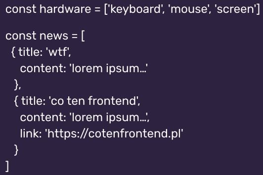

Przeglądarki implementują różne feature-y w różnym czasie (i często każda po swojemu)
Prefixy pochodzą z historii przeglądarek. kiedyś trzeba było dopisywać prefix przy własności osobno dla każdej
przeglądarki (starsze wersje dalej potrzebują) np. flexbox
display: -webkit-box (google chrome, safari)
display: -moz-box (firefox mozilla)
display: -ms-box (microsoft - internet explorer, edge)
Sprawdzenie do jakiej własności trzeba dopisywać prefixy i jakie dla jakich przeglądarek na stronie - CanIUse
Autoprefixer
sam dopisuje prefixy, gdzie są wymagane
Autoprefixer - strona pokazująca jak działa,
nakładka zainstalowana w startert kit
Google fonts
Google fonts - serwis który pozwala nam na dołączenie
zewnętrzych fontów do naszego projektu
zażółć gęślą jaźń
te 3 słowa zawierają wszystkie polskie znaki diakrytyczne
Latin Extended - trzeba zaznaczyc, żeby zaimportować polskie znaki
2 sposoby importu:
Kopia arkusza stylów (link generowany podczas wyboru fontów) - wrzucamy w head, tam
gdzie nasze style
@import (polecane) - kopiujemy link @import (link generowany podczas wyboru fontów) i
wklejamy przy naszych @importach
font-family: 'nazwa fontu' (podajemy w apostrofach, bo mogą zawierać spację)
Pliki z fontami mogą "ważyć", dlatego nie nadużywamy tego - może wpływać na czas ładowania strony
z drugiej strony fonty google mogą być zapisywane w pamięci podręcznej przeglądarki co powoduje szybsze
ładowanie stron kolejnym razem
Warto ograniczyć się do 2 rodzje fontów, lepiej działa i ładniej wygląda (unikamy tzw. choinki)
GIT: branche
Branche (gałęzie)
pozwalają na pracę w wielu osiach; równolegle
pozwalają na bezkarne testowanie (możemy psuć dowolu i powrócić do wcześniejszej
wersji lub możemy porównywać wersje)
służą do bardziej efektywnego rozwijania oprogramowania, pozwalją na pracę równoległą
(kilka osób może pracować rónolegle nad jakąś funkcją i później możemy połączyć to w całość
pozwalają zrównoleglić pracę
zwiększają czytelność postępu prac nad projektem
ułatwiają wypuszczanie rzeczy na świat (wersja stabilna jest wypuszczona, wersja
rozwijana na innym branchu
master - główny branch, domyślny
git branch - wypisuje nam branche, które mamy aktualnie w projekcie
git branch nazwaBrancha - tworzenie nowego brancha
git checkout nazwaBrancha - przełączenie na innego brancha
git push --set-upstream origin nazwaBrancha - polecenie pushujące nowego brancha na gh
(terminal podpowiadą tą komendę)
git merge nazwaBrancha - ("merge-owanie" - łączenie branchów) wchodzimy na brancha, który
chcemy, żeby został (będziemy dalej na nim pracować) i wpisujemy komendę, który branch ma zostać połączony
Markdown
Markdown - powstał poto, żeby stworzyć uniwersalne formatowanie tekstu. Czytelne zarówno w formie źródła jak i
wyniku. Format pozwalający na bezpieczne wprowadzanie treści bez konieczności korzystania z HTML-u
uniwersalne formatowanie tekstu
czytelne zrówno w formie źródła jak i wyniku
bezpiecznie wprowadznie treści bez konieczności korzystania z HTML-u
nie trzeba pisać edytora
Stackedit - strona pokazująca działanie markdown-a
- element listy nienumerowanej - element listy nienumerowanej - element listy nienumerowanej
1. element listy numerowanej 2. element listy numerowanej 3. element listy numerowanej _ _ _ _1 element listy numerowanej - sublista (4 razy spcja + numer)
README.md - plik opisujący stronę, zachęca do obejrzenia projektu, opis narzędzi, instrukcje
itp. - formatowany za pomocą markdown-a
git pull - ściągnięcie zmian z gh do projektu lokalnego
README.md - można edytować z poziomu gh lub za pomocą VSC. Z pozycji gh można również
wykonywać commity, które następnie jesteśmy w stanie pobrać do projektu lokalnego (komenda - git pull)
JS: Tablice
Tablica [array] != tabela (table)
Jak wygląda tablica?
na rysunku: tablica stringów i tablica obiektów

Tablica może przyjmować różne rzeczy. Otwieramy za pomocą nawiasu [, wypusujemy po przecinku i zamykamy]
index [element 0, element 1, element 2] == index [0, 1, 2] - indexy liczymy od zera
tablica[index] - pobieranie elementu z tablicy na danym miejscu
tablica.length - ile mamy ekementów (liczy od 1, nie od 0!)
Stringi zachowują się podobnie jak tablice np.
const name = "maciek"
console.log(name[1]) - a
Można też sprawdzić jak długi jest string np.
console.log(name.length) - 6 (liczy również spację jako znak)
Jak pobrać znnak na danym miejscu?
const test="co ten frontend"
test[0] - c
test[1] - o
test[2] - _
test.length - 15 (liczy spacje)
Jak dodać element do tablicy na końcu? tablica.push(element) - można umieszczać "stringi", {obiekty}
Jak dodać element do tablicy na początku? tablica.unshift(element)
Jak usunąć element z tablicy z początku? tablica.shift(element)
Jak usunąć element z tablicy z końca? tablica.pop(element)
Jak sprawdzić czy mamy element w tablicy? tablica.indexOf(element)
jezeli otrzymamy wynik -1 ti znaczy, że nie ma takiego elementu
Jak usunąć n elementów od danej pozycji? tablica.splice(index, liczbaElementów)
Jak pobrać n elementów od danej pozycji? tablica.slice(index, stop) - pobiera ale nie usówa z tablicy